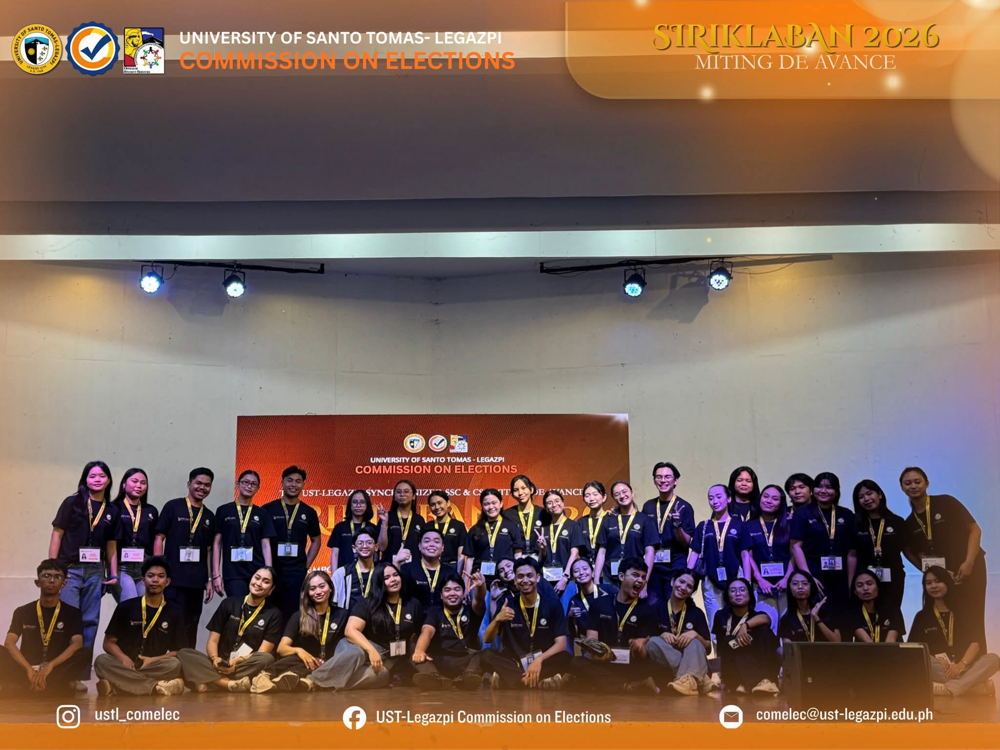
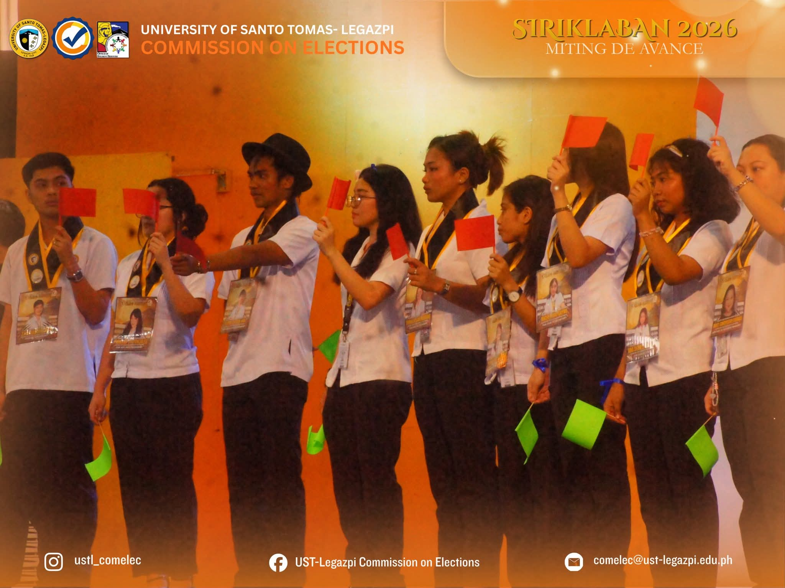
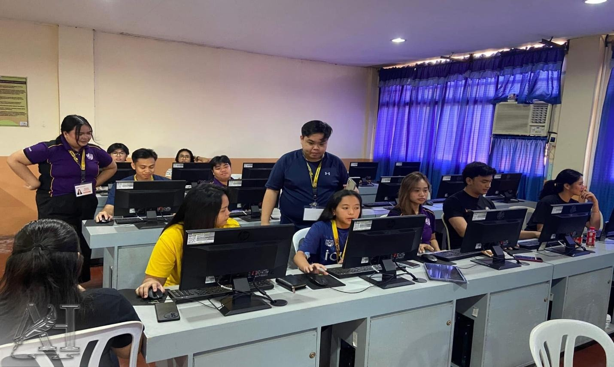

SIRIKLABAN 2026: Miting De Avance served as a platform for candidates of the Supreme Student Council (SSC) and College Student Councils (CSC) to present their platforms, advocacies, and leadership visions to the Thomasian student body before the synchronized student elections. Held at the UST-Legazpi Dome, the event encouraged active student participation through open forums, leadership discussions, and interactive segments that highlighted the candidates’ perspectives on relevant institutional issues.
The program featured speeches from aspiring student leaders, where candidates introduced themselves and discussed their plans, capabilities, and commitments in serving the student community. Through the Campus Leadership Express and Leadership Accountability Forum, candidates showcased their stands on various concerns, defended their qualifications, and demonstrated their readiness for leadership and public service.
An audience open forum was also conducted, allowing students to directly raise questions and concerns regarding campus issues, proposed platforms, and the candidates’ preparedness for their respective positions. The activity promoted transparency, accountability, critical thinking, and democratic participation among students.
Anchored on the theme “Empowering Integrity and Service,” the event emphasized the importance of responsible leadership, student engagement, and informed decision-making in the electoral process. The synchronized SSC-CSC elections were conducted online from April 21 to April 22, 2026, ensuring continued student participation despite the nationwide transport strike.

Image 1. All the candidates chose between red flags and green flags during one of the segments of the event.

Image 2. COMELEC members distributed passkeys to students during the online voting process.